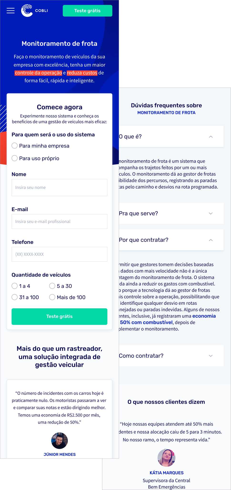

Resume
As a Growth Designer, planning, measuring and testing our landing pages was essential. Focusing on increasing the conversion rates, we were always experimenting with them. One of our most immediate fixes was the resizing of the pre-scroll content to match the average screen fold.
If before that, only 25% of users would reach 1/3 of the screen, now 50% of them continued to read it through its half.
We also started to develop new approaches to our landing pages. Our main site had multiple SEO-driven pages that had low visibility and would only help to rank the site on SERPs, so we redesigned them to work as future independent landing pages.
